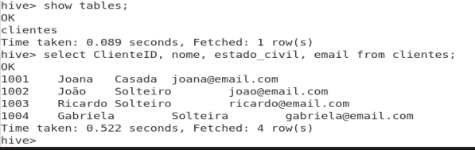
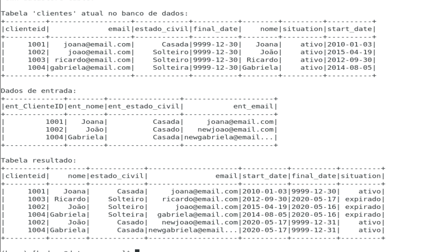

João Pedro Pereira
João Pedro Pereira
Slowly Change Dimension em um DW com Hive e Spark
Sun 17 May 2020Um dos mais amplos usos do Hadoop atualmente é construir uma plataforma de Data Warehousing sobre um Data Lake, através do Apache Hive.
Slowly Changing Dimension(SCD) é um termo utilizado em teorias de Data Management e Data Warehousing para grupos de dados lógicos como informações de produtos, clientes, etc. que mudam lentamente ao longo do tempo. Nesse exemplo vou implementar o SCD tipo 2 em uma tabela no DW do Hive utilizando o Apache Spark.

Mas o que é SCD tipo 2?
O SCD Tipo 2 é a técnica mais utilizada para atualizações de dimensões. Nesse tipo de SCD é adicionado um novo registro com as mudanças, preservando sempre os dados anteriores. Dessa forma, os registros da tabela fato vão apontar para a versão correspondente nas dimensões de acordo com a data de referência.

Vamos ao exemplo!
Temos uma tabela atual:
Novos dados para serem atualizados:
Tabela resultante:
O que mudou?
- A cliente Joana não teve alterações, portanto manteve o registro.
- João e Gabriela tiveram seus dados alterados, logo novos registros são lançados.
- Ricardo não está na nova carga. É um caso de exclusão.
Para começar, vou fazer uma ingestão de dados do MySQL para o Hive, importando a tabela ‘clientes’ utilizando o Apache Sqoop. Obs.: É necessário que seja criada a database ‘companydb’ no Hive.
sqoop import --connect jdbc:mysql://localhost:3306/companydb?serverTimezone=UTC --username root --password xxx --m 1 --table clientes --hive-import --hive-database companydb
Pode também ser utilizado a comando import-all-tables para importar todas as tabelas do db do MySQL.
sqoop import-all-tables --connect jdbc:mysql://localhost:3306/companydb?serverTimezone=UTC --username root --password xxx –m --hive-import --hive-database companydb
Aqui é informado endereço do meu banco de dados no MySQL, a tabela a ser importada e o direcionamento para o banco de dados ‘companydb’ no Hive. Para conseguir realizar esse processo, tive que configurar dois elementos antes:
- Configurar o MySQL como metadados do Hive. Por padrão o Hive usa o Apache Derby como gerenciador do metastore, que é um pouco limitado comparado ao MySQL. Segue link de referência da configuração aqui.
- Baixar o arquivo hive-common-0.10.0.jar e colocar na pasta de libs do sqoop.

Após a importação let's code com Pyspark:
E o resultado final:
